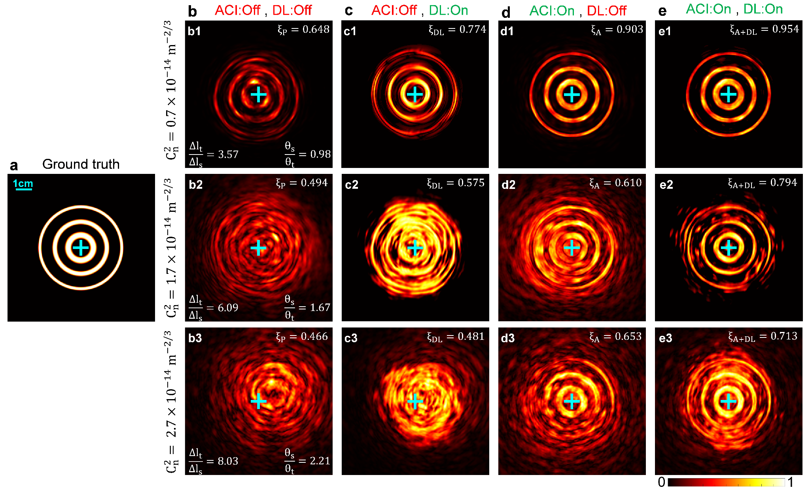
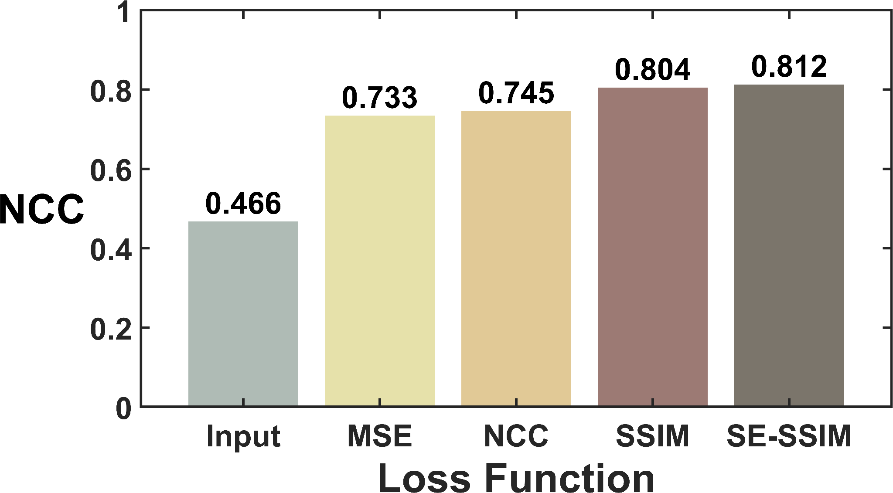
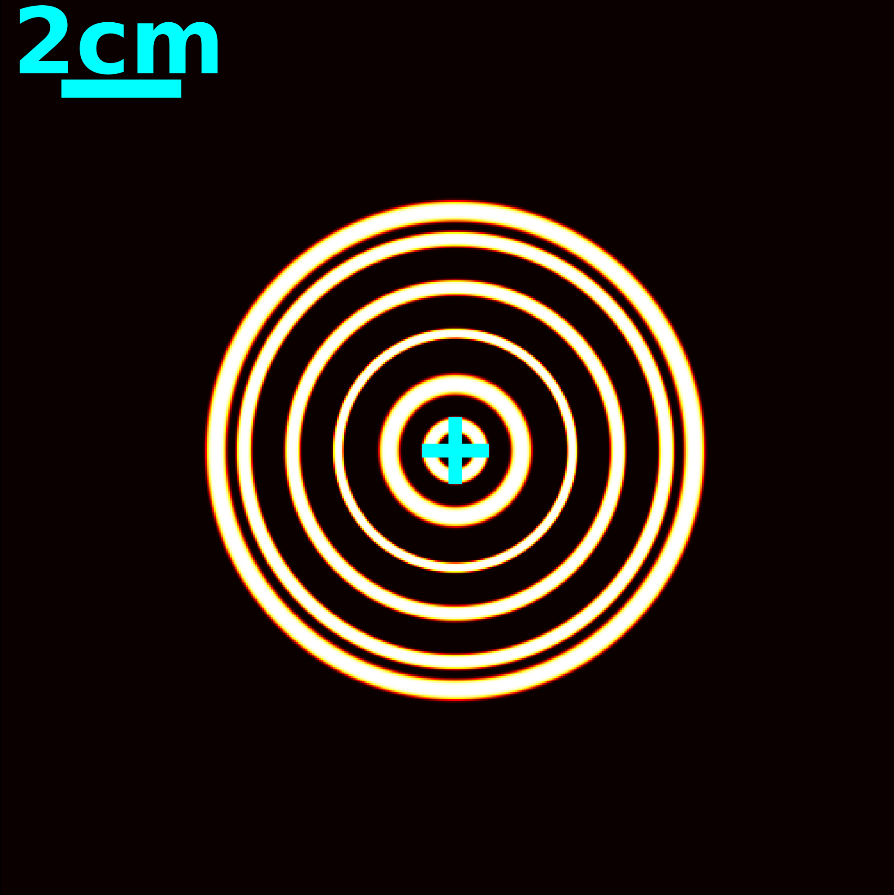
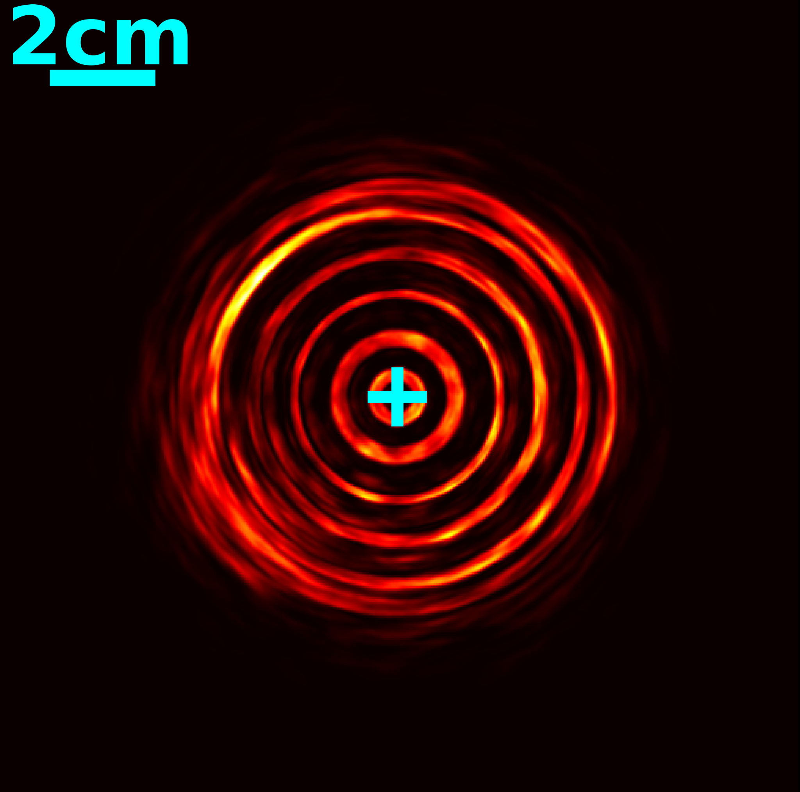
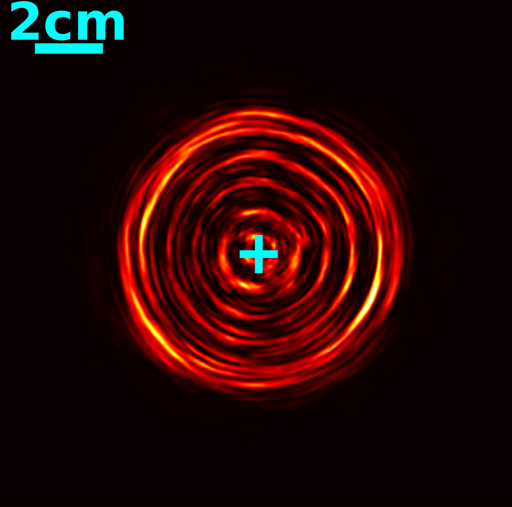
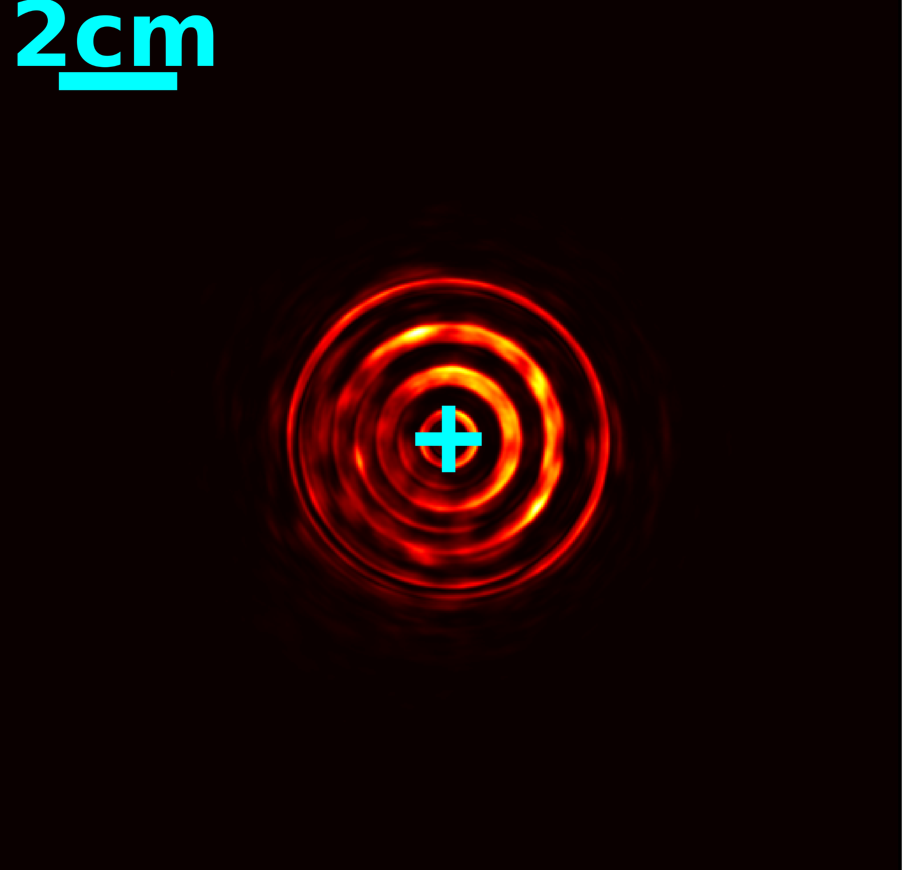
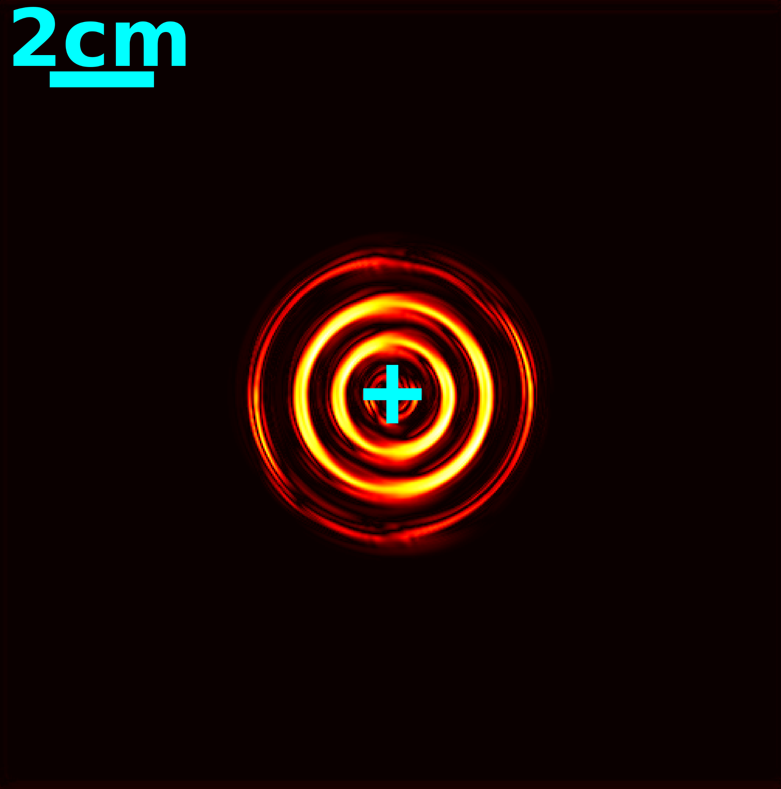

Learning systems
Deep transfer learning for complex beam transmission.
Combining ACI with CNN-based restoration to compare optical compensation, learning methods, and hybrid approaches under atmospheric distortion.